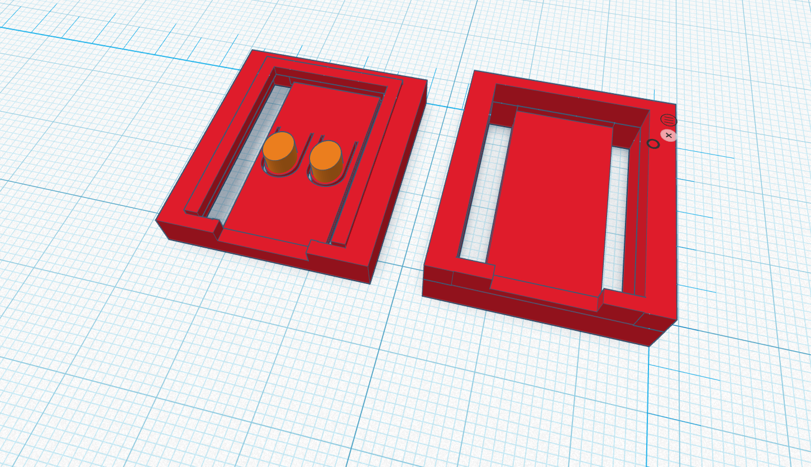

Prototype 1

Key Features
Prototype 1 was making a case that is in two pieces and clicked from around the halfway point. There is a hole in the front for the usb, two long strips on the bottom for access to pins and a smaller strip on the top for ventilation.
- Basic outer case shape
- Space for the ESP32-C3 Zero board
- Opening for USB access
- Simple design that was easy to print
Advantages
- Quick and simple to design
- Easy to 3D print
- Gave the team a physical model to test
- Helped identify size and access problems early
- Parts fit properly
Problems or Limitations
- The pin connections needed better protection.
- The USB access area needed to be checked and improved.
- The case needed better ventilation for heat.
- The design could be stronger for repeated classroom use.
- Previuos designs didn't match with the micro-controller or with the seprate parts together.
Planned Improvements for Prototype 2
For Prototype 2, the design will be improved by adding better pin protection, improving the access openings, adding ventilation, and making the case stronger and neater.